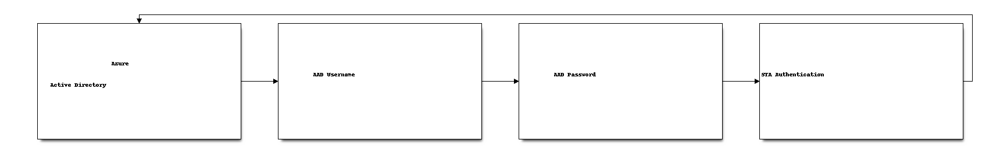

Azure Custom Authentication Factors with SafeNet Trusted Access¶
Overview¶
Azure Custom Authentication Factors (Custom Controls) allows extending the Azure Active Directory authentication with a third party authentication provider, using OIDC protocol. When using custom controls, the users are redirected to SafeNet Trusted Access to satisfy authentication requirements outside of Azure Active Directory. To satisfy this control, a user’s browser is redirected to SafeNet Trusted Access, performs any required authentication, and is then redirected back to Azure Active Directory. Azure Active Directory verifies the response and, if the user was successfully authenticated or validated, the user continues in the Conditional Access flow.
